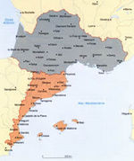

De: La Frikipedia, la enciclopedia extremadamente seria.
De: La Frikipedia, la enciclopedia extremadamente seria. De: La Frikipedia, la enciclopedia extremadamente seria.

|
FRIKIPEDIA QUIERE QUE ESTA DEFINICIÓN
PASE A SER UN ARTÍCULO FRIKIPÉDICO La información contenida en este artículo es una mínima parte de su jugo total, así que ponte los guantes, saca el tupperwere y empieza a exprimir el tema. Si lo haces serás recompensado con una galleta en almíbar y algo más. |
| De la serie Países del planeta tierra: | |||||
| Occitania | |||||
|---|---|---|---|---|---|
| |||||
| Lema: "¡A tomar por occ!" | |||||
| Himno: "A Occitania hemos de ir, con una media, con una media"
| |||||
| 
| |||||
| Capital | Occitania | ||||
| Mayor ciudad | Barcelona | ||||
| Lenguas oficiales | Occitano (catalán cerradísimo) | ||||
| Gobierno | dictadura democratica | ||||
| Caudillo | josep guardiola | ||||
| Área | b*h/2 | ||||
| Población | Cuentala tu | ||||
| Moneda | Peseta | ||||
| Zona horaria | La de Cataluña | ||||
| Dominio Internet | .cat | ||||
| Código telefónico | 5555rriente
| ||||
| Conozcan esta ciudad | |||||
Occitania es la región sur de Francia y sus países occitanos del este de la península Ibérica, dotados una identidad nacional y una lengua propia: el occitano.
El año 2006 Occitania, animada por los recientes acontecimientos en España, declaró a Valencia, Cataluña y Baleares como los Países Occitanos, basándose en derechos históricos y culturales. Sus respectivas lenguas se catalogaron como variantes hispanas del occitano y fueron abolidas.
Esta decisión fue democráticamente aceptada por la Generalitat Occitana en representación de sus 20 millones de ciudadanos.
Así, Cataluña pasó de cazador a cazado en su propio juego, mientras valencianos, baleares (y un buen número de catalanes también) recaudaron con éxito cinco millones de firmas para despellejar y meter en barriles de agua salada a Maragall.
El resto de los españoles asistieron con la sonrisa en los labios a este fascinante giro en los acontecimientos.
Entre los platos típicos más populares, podemos encontrar la "Butifarra de Seba", que consiste en un objeto grande, negro y con manchitas blancas, elementos que han fascinado a gente como Jesús Vázquez o Pa amb Tomaca, que se sirve principalmente en los restaurantes más caros, y por supuesto el famoso Bocadillo de Catalana, un manjar caníbal que ha sido el más aclamado por la crítica en los últimos 20 y pico años.
Autor(es):